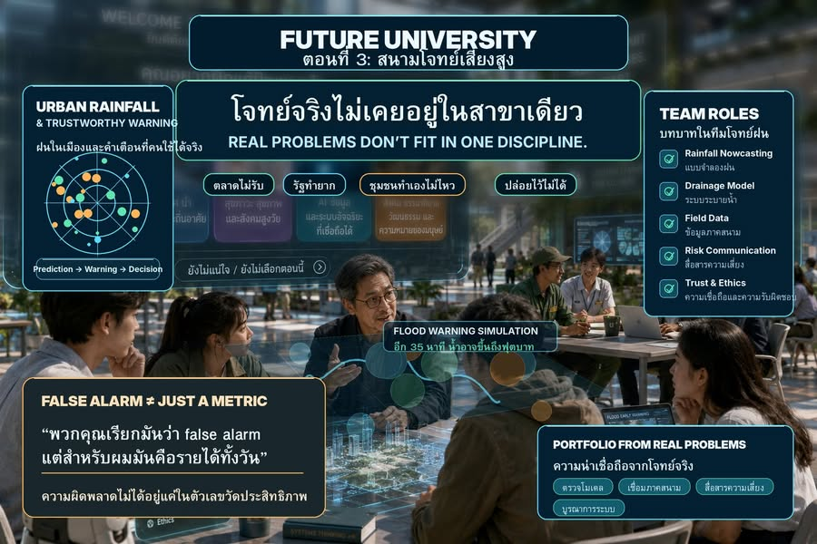

สนามโจทย์เสี่ยงสูง
{kind=link}

โจทย์บางอย่างไม่มีใครอยากเป็นเจ้าของ เพราะเสี่ยง วัดผลยาก ผลตอบแทนไม่ชัด และหากพลาด คนมักตำหนิก่อนเข้าใจเหตุผล เอกชนยังไม่เห็นรูปแบบที่ยั่งยืน รัฐต้องรับผิดชอบต่อระบบขนาดใหญ่ ส่วนชุมชนไม่มีข้อมูล เครื่องมือ หรือกำลังคนเพียงพอ
โจทย์เหล่านี้จึงค้างกลางอากาศ ทั้งที่สำคัญเกินกว่าจะปล่อยไว้ ใน Future University มหาวิทยาลัยต้องมี สนามโจทย์เสี่ยงสูง สำหรับฝึกทำสิ่งที่ยังไม่มีคำตอบสำเร็จรูป
จากการทำนายฝน สู่การตัดสินใจของคน
เมื่อฝนในเมืองตกเป็นกลุ่มเล็ก หนัก และรวดเร็ว ถนนเส้นหนึ่งท่วมแต่อีกเส้นยังแห้ง ตลาดต้องยกของหนีน้ำทั้งที่ระบบเตือนยังบอกไม่ได้ชัด แบบจำลองที่แม่นเพียงอย่างเดียวจึงไม่พอ
คำถามที่สำคัญกว่า “ทำนายฝนได้แม่นแค่ไหน” คือ จะแปลงความน่าจะเป็นของฝนให้กลายเป็นการตัดสินใจของคนจริงได้อย่างไร
Urban Rainfall and Trustworthy Warning
สนามโจทย์นี้รวมวิศวกรรมคอมพิวเตอร์ที่พัฒนาการพยากรณ์ระยะสั้น วิศวกรรมทรัพยากรน้ำที่ศึกษาระบบระบายน้ำ ภูมิศาสตร์ที่ทำแผนที่จุดเสี่ยง เศรษฐศาสตร์ที่วิเคราะห์ผลกระทบต่อร้านค้า นักสื่อสารที่ออกแบบข้อความเตือนภัย และสังคมศาสตร์ที่ทำงานกับชุมชน
ยังมีเจ้าหน้าที่เทศบาลซึ่งถือข้อมูลน้ำท่วมจริง คนขับวินมอเตอร์ไซค์ซึ่งรู้ว่าน้ำเริ่มขังตรงไหนก่อนระบบทางการ และ AI ที่ช่วยตรวจจับความผิดปกติของข้อมูลฝนทันที อาจารย์ไม่ได้เริ่มด้วยบทที่หนึ่ง แต่ตั้งโจทย์ คุมความเสี่ยง ถามคำถามที่ทีมอยากหลบ และย้ำว่าโจทย์จริงไม่เคยอยู่ในสาขาเดียว
กราฟสวยไม่ได้แปลว่าคนรู้ว่าต้องทำอะไร
แบบจำลองอาจมีค่าความแม่นยำดีและ dashboard ดูพร้อมใช้งาน แต่ข้อความว่า “คาดการณ์ปริมาณฝนสะสมสูงในพื้นที่เขตเมืองชั้นใน โปรดเฝ้าระวังสถานการณ์น้ำท่วมขัง” ไม่ได้ช่วยให้แม่ค้ารู้ว่าควรย้ายของ ปิดร้าน รีบกลับบ้าน หรือรอดูต่อ
นี่ไม่ใช่คำเตือน แต่เป็นประโยคที่ทำให้คนไม่รู้ว่าจะทำอะไร ทีมจึงต้องลงพื้นที่ คุยกับแม่ค้า โรงเรียน คนขับรถรับส่ง เจ้าหน้าที่เขต และผู้ที่ต้องตัดสินใจจริงภายในไม่กี่นาที จึงพบว่าปัญหาไม่ได้อยู่ที่แบบจำลองฝนอย่างเดียว แต่อยู่ที่การแปลข้อมูลให้เป็นการกระทำ
คำเตือนต้องเคารพชีวิตจริง
ข้อความใหม่จึงเปลี่ยนจาก “ฝนสะสมสูง” เป็น “อีกประมาณ 35 นาที น้ำอาจขึ้นถึงฟุตบาทหน้าตลาดฝั่งถนนหลัก ร้านที่วางของต่ำควรย้ายของขึ้นที่สูงก่อน 16.20 น.” ครั้งนี้คนเริ่มฟัง ไม่ใช่เพียงเพราะ AI ฉลาดขึ้น แต่เพราะคำเตือนเริ่มสัมพันธ์กับสิ่งที่ผู้รับต้องตัดสินใจ
False alarm ไม่ได้เป็นเพียง metric
แต่โลกจริงไม่ใจดี วันหนึ่งระบบเตือนเร็วเกินไป ร้านค้าหลายแห่งเก็บของก่อนเวลา ลูกค้าหาย รายได้ลดลง และน้ำไม่ท่วมตามที่คาด
เมื่อทีมเรียกเหตุการณ์นี้ว่า false alarm เจ้าของร้านตอบว่า “พวกคุณเรียกมันว่า false alarm เกินความจำเป็น แต่สำหรับผมมันคือรายได้ทั้งวัน” นี่คือจุดที่ทุกคนได้เรียนรู้ว่า ความผิดพลาดไม่ได้อยู่เพียงในตัวเลขวัดประสิทธิภาพของระบบ แต่กระจายต้นทุนไปยังผู้คนที่อาจไม่ได้มีส่วนกำหนดระบบนั้นเลย
Portfolio จากบทบาทและความรับผิดชอบจริง
เมื่อจบโครงการ ผู้เรียนไม่ได้มีเพียงเกรด A หรือ B+ แต่มีหลักฐานว่าเคยรับผิดชอบบทบาทใด: ตรวจสอบคุณภาพแบบจำลอง เชื่อมข้อมูลภาคสนาม แปลความต้องการของผู้มีส่วนเกี่ยวข้อง ออกแบบการสื่อสารความเสี่ยง หรือเชื่อมระบบต่าง ๆ ให้ทำงานร่วมกัน
สิ่งที่สำคัญกว่าคือ ทุกคนได้เห็นว่าความรู้ซึ่งนำไปใช้กับโลกจริงมีต้นทุนเสมอ และความน่าเชื่อถือไม่ได้เกิดจากการตอบถูกในห้องสอบ แต่เกิดจากวิธีทำงานกับความไม่แน่นอน ผลกระทบ และผู้คนที่ต้องรับผลจากคำตอบของเรา
มหาวิทยาลัยไม่ได้สำคัญเพราะรู้ทุกคำตอบ
มหาวิทยาลัยสำคัญเพราะสังคมต้องมีพื้นที่สำหรับฝึกแก้ปัญหาที่ยังไม่มีคำตอบชัดเจน — ปัญหาที่ตลาดไม่อยากรับ รัฐทำได้ยาก ชุมชนทำเองไม่ไหว แต่ปล่อยไว้ไม่ได้
มหาวิทยาลัยหลังยุครายวิชาจึงไม่ใช่ที่ที่คนเรียนครบตามตาราง แต่เป็นที่ที่คนค่อย ๆ สร้างความน่าเชื่อถือจากโจทย์จริง ความเสี่ยงจริง ความผิดพลาดจริง และผู้คนจริงที่ได้รับผลกระทบจากสิ่งที่เราทำ
ตอนถัดไป เราไม่ได้ลบศาสตร์ เราลดกำแพงของศาสตร์ เมื่อโจทย์จริงไม่เคยอยู่ในสาขาเดียว คณะจะเปลี่ยนจากอาณาเขตปิดมาเป็นคลังความลึกทางวิชาการได้อย่างไร